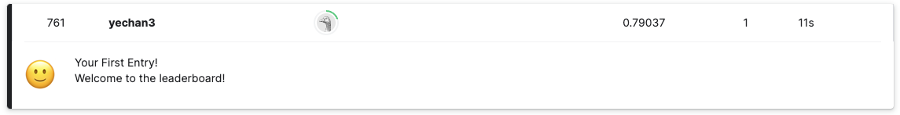

#!pip install autogluon.eda14wk-61: NLP with Disaster Tweets / 자료분석(Autogluon)
1. 강의영상
2. Imports
import numpy as np
import pandas as pd
import matplotlib.pyplot as plt
#---#
from autogluon.tabular import TabularPredictor
#---#
import warnings
warnings.filterwarnings('ignore')3. Data
!kaggle competitions download -c nlp-getting-startedDownloading nlp-getting-started.zip to /home/cgb2/Dropbox/07_lectures/2023-09-MP2023/posts
100%|████████████████████████████████████████| 593k/593k [00:00<00:00, 2.47MB/s]
100%|████████████████████████████████████████| 593k/593k [00:00<00:00, 2.46MB/s]!unzip nlp-getting-started.zip -d data Archive: nlp-getting-started.zip
inflating: data/sample_submission.csv
inflating: data/test.csv
inflating: data/train.csv df_train = pd.read_csv('data/train.csv')
df_test = pd.read_csv('data/test.csv')
sample_submission = pd.read_csv('data/sample_submission.csv')!rm -rf data
!rm nlp-getting-started.zip4. 분석
df_train.head()| id | keyword | location | text | target | |
|---|---|---|---|---|---|
| 0 | 1 | NaN | NaN | Our Deeds are the Reason of this #earthquake M... | 1 |
| 1 | 4 | NaN | NaN | Forest fire near La Ronge Sask. Canada | 1 |
| 2 | 5 | NaN | NaN | All residents asked to 'shelter in place' are ... | 1 |
| 3 | 6 | NaN | NaN | 13,000 people receive #wildfires evacuation or... | 1 |
| 4 | 7 | NaN | NaN | Just got sent this photo from Ruby #Alaska as ... | 1 |
df_test.head()| id | keyword | location | text | |
|---|---|---|---|---|
| 0 | 0 | NaN | NaN | Just happened a terrible car crash |
| 1 | 2 | NaN | NaN | Heard about #earthquake is different cities, s... |
| 2 | 3 | NaN | NaN | there is a forest fire at spot pond, geese are... |
| 3 | 9 | NaN | NaN | Apocalypse lighting. #Spokane #wildfires |
| 4 | 11 | NaN | NaN | Typhoon Soudelor kills 28 in China and Taiwan |
# step1 -- pass
# step2
predictr = TabularPredictor(label = 'target')
# step3
predictr.fit(df_train,num_gpus=1)
# step4
yhat = predictr.predict(df_test) No path specified. Models will be saved in: "AutogluonModels/ag-20231207_031213"
No presets specified! To achieve strong results with AutoGluon, it is recommended to use the available presets.
Recommended Presets (For more details refer to https://auto.gluon.ai/stable/tutorials/tabular/tabular-essentials.html#presets):
presets='best_quality' : Maximize accuracy. Default time_limit=3600.
presets='high_quality' : Strong accuracy with fast inference speed. Default time_limit=3600.
presets='good_quality' : Good accuracy with very fast inference speed. Default time_limit=3600.
presets='medium_quality' : Fast training time, ideal for initial prototyping.
Beginning AutoGluon training ...
AutoGluon will save models to "AutogluonModels/ag-20231207_031213"
=================== System Info ===================
AutoGluon Version: 1.0.0
Python Version: 3.10.13
Operating System: Linux
Platform Machine: x86_64
Platform Version: #26~22.04.1-Ubuntu SMP PREEMPT_DYNAMIC Thu Jul 13 16:27:29 UTC 2
CPU Count: 16
Memory Avail: 117.71 GB / 125.71 GB (93.6%)
Disk Space Avail: 217.68 GB / 456.88 GB (47.6%)
===================================================
Train Data Rows: 7613
Train Data Columns: 4
Label Column: target
AutoGluon infers your prediction problem is: 'binary' (because only two unique label-values observed).
2 unique label values: [1, 0]
If 'binary' is not the correct problem_type, please manually specify the problem_type parameter during predictor init (You may specify problem_type as one of: ['binary', 'multiclass', 'regression'])
Problem Type: binary
Preprocessing data ...
Selected class <--> label mapping: class 1 = 1, class 0 = 0
Using Feature Generators to preprocess the data ...
Fitting AutoMLPipelineFeatureGenerator...
Available Memory: 120538.91 MB
Train Data (Original) Memory Usage: 2.19 MB (0.0% of available memory)
Inferring data type of each feature based on column values. Set feature_metadata_in to manually specify special dtypes of the features.
Stage 1 Generators:
Fitting AsTypeFeatureGenerator...
Stage 2 Generators:
Fitting FillNaFeatureGenerator...
Stage 3 Generators:
Fitting IdentityFeatureGenerator...
Fitting CategoryFeatureGenerator...
Fitting CategoryMemoryMinimizeFeatureGenerator...
Fitting TextSpecialFeatureGenerator...
Fitting BinnedFeatureGenerator...
Fitting DropDuplicatesFeatureGenerator...
Fitting TextNgramFeatureGenerator...
Fitting CountVectorizer for text features: ['text']
CountVectorizer fit with vocabulary size = 641
Stage 4 Generators:
Fitting DropUniqueFeatureGenerator...
Stage 5 Generators:
Fitting DropDuplicatesFeatureGenerator...
Types of features in original data (raw dtype, special dtypes):
('int', []) : 1 | ['id']
('object', []) : 2 | ['keyword', 'location']
('object', ['text']) : 1 | ['text']
Types of features in processed data (raw dtype, special dtypes):
('category', []) : 2 | ['keyword', 'location']
('category', ['text_as_category']) : 1 | ['text']
('int', []) : 1 | ['id']
('int', ['binned', 'text_special']) : 28 | ['text.char_count', 'text.word_count', 'text.capital_ratio', 'text.lower_ratio', 'text.digit_ratio', ...]
('int', ['text_ngram']) : 631 | ['__nlp__.05', '__nlp__.08', '__nlp__.10', '__nlp__.11', '__nlp__.15', ...]
3.3s = Fit runtime
4 features in original data used to generate 663 features in processed data.
Train Data (Processed) Memory Usage: 9.46 MB (0.0% of available memory)
Data preprocessing and feature engineering runtime = 3.3s ...
AutoGluon will gauge predictive performance using evaluation metric: 'accuracy'
To change this, specify the eval_metric parameter of Predictor()
Automatically generating train/validation split with holdout_frac=0.1, Train Rows: 6851, Val Rows: 762
User-specified model hyperparameters to be fit:
{
'NN_TORCH': {},
'GBM': [{'extra_trees': True, 'ag_args': {'name_suffix': 'XT'}}, {}, 'GBMLarge'],
'CAT': {},
'XGB': {},
'FASTAI': {},
'RF': [{'criterion': 'gini', 'ag_args': {'name_suffix': 'Gini', 'problem_types': ['binary', 'multiclass']}}, {'criterion': 'entropy', 'ag_args': {'name_suffix': 'Entr', 'problem_types': ['binary', 'multiclass']}}, {'criterion': 'squared_error', 'ag_args': {'name_suffix': 'MSE', 'problem_types': ['regression', 'quantile']}}],
'XT': [{'criterion': 'gini', 'ag_args': {'name_suffix': 'Gini', 'problem_types': ['binary', 'multiclass']}}, {'criterion': 'entropy', 'ag_args': {'name_suffix': 'Entr', 'problem_types': ['binary', 'multiclass']}}, {'criterion': 'squared_error', 'ag_args': {'name_suffix': 'MSE', 'problem_types': ['regression', 'quantile']}}],
'KNN': [{'weights': 'uniform', 'ag_args': {'name_suffix': 'Unif'}}, {'weights': 'distance', 'ag_args': {'name_suffix': 'Dist'}}],
}
Fitting 13 L1 models ...
Fitting model: KNeighborsUnif ...
0.7283 = Validation score (accuracy)
0.07s = Training runtime
0.04s = Validation runtime
Fitting model: KNeighborsDist ...
0.7402 = Validation score (accuracy)
0.07s = Training runtime
0.04s = Validation runtime
Fitting model: LightGBMXT ...
Training LightGBMXT with GPU, note that this may negatively impact model quality compared to CPU training.
[LightGBM] [Fatal] GPU Tree Learner was not enabled in this build.
Please recompile with CMake option -DUSE_GPU=1
Warning: GPU mode might not be installed for LightGBM, GPU training raised an exception. Falling back to CPU training...Refer to LightGBM GPU documentation: https://github.com/Microsoft/LightGBM/tree/master/python-package#build-gpu-versionOne possible method is: pip uninstall lightgbm -y pip install lightgbm --install-option=--gpu
0.7953 = Validation score (accuracy)
0.58s = Training runtime
0.01s = Validation runtime
Fitting model: LightGBM ...
Training LightGBM with GPU, note that this may negatively impact model quality compared to CPU training.
Warning: GPU mode might not be installed for LightGBM, GPU training raised an exception. Falling back to CPU training...Refer to LightGBM GPU documentation: https://github.com/Microsoft/LightGBM/tree/master/python-package#build-gpu-versionOne possible method is: pip uninstall lightgbm -y pip install lightgbm --install-option=--gpu
[LightGBM] [Fatal] GPU Tree Learner was not enabled in this build.
Please recompile with CMake option -DUSE_GPU=1
0.7992 = Validation score (accuracy)
0.75s = Training runtime
0.01s = Validation runtime
Fitting model: RandomForestGini ...
0.7808 = Validation score (accuracy)
0.99s = Training runtime
0.05s = Validation runtime
Fitting model: RandomForestEntr ...
0.7703 = Validation score (accuracy)
1.0s = Training runtime
0.3s = Validation runtime
Fitting model: CatBoost ...
Training CatBoost with GPU, note that this may negatively impact model quality compared to CPU training.
Warning: CatBoost on GPU is experimental. If you encounter issues, use CPU for training CatBoost instead.
0.8018 = Validation score (accuracy)
4.63s = Training runtime
0.02s = Validation runtime
Fitting model: ExtraTreesGini ...
0.7874 = Validation score (accuracy)
1.13s = Training runtime
0.05s = Validation runtime
Fitting model: ExtraTreesEntr ...
0.7835 = Validation score (accuracy)
1.15s = Training runtime
0.05s = Validation runtime
Fitting model: NeuralNetFastAI ...
No improvement since epoch 2: early stopping
0.7808 = Validation score (accuracy)
7.44s = Training runtime
0.02s = Validation runtime
Fitting model: XGBoost ...
0.7953 = Validation score (accuracy)
0.99s = Training runtime
0.01s = Validation runtime
Fitting model: NeuralNetTorch ...
0.727 = Validation score (accuracy)
17.46s = Training runtime
0.02s = Validation runtime
Fitting model: LightGBMLarge ...
Training LightGBMLarge with GPU, note that this may negatively impact model quality compared to CPU training.
[LightGBM] [Fatal] GPU Tree Learner was not enabled in this build.
Please recompile with CMake option -DUSE_GPU=1
Warning: GPU mode might not be installed for LightGBM, GPU training raised an exception. Falling back to CPU training...Refer to LightGBM GPU documentation: https://github.com/Microsoft/LightGBM/tree/master/python-package#build-gpu-versionOne possible method is: pip uninstall lightgbm -y pip install lightgbm --install-option=--gpu
0.8071 = Validation score (accuracy)
2.71s = Training runtime
0.02s = Validation runtime
Fitting model: WeightedEnsemble_L2 ...
Ensemble Weights: {'LightGBMLarge': 0.265, 'XGBoost': 0.163, 'CatBoost': 0.143, 'NeuralNetFastAI': 0.143, 'RandomForestEntr': 0.102, 'LightGBMXT': 0.082, 'LightGBM': 0.041, 'ExtraTreesGini': 0.041, 'KNeighborsDist': 0.02}
0.8268 = Validation score (accuracy)
0.59s = Training runtime
0.0s = Validation runtime
AutoGluon training complete, total runtime = 44.0s ... Best model: "WeightedEnsemble_L2"
TabularPredictor saved. To load, use: predictor = TabularPredictor.load("AutogluonModels/ag-20231207_031213")5. 제출
sample_submission| id | target | |
|---|---|---|
| 0 | 0 | 0 |
| 1 | 2 | 0 |
| 2 | 3 | 0 |
| 3 | 9 | 0 |
| 4 | 11 | 0 |
| ... | ... | ... |
| 3258 | 10861 | 0 |
| 3259 | 10865 | 0 |
| 3260 | 10868 | 0 |
| 3261 | 10874 | 0 |
| 3262 | 10875 | 0 |
3263 rows × 2 columns
sample_submission['target'] = yhat
sample_submission.to_csv("submission.csv",index=False)!kaggle competitions submit -c nlp-getting-started -f submission.csv -m "오토글루온, TabularPredictor"100%|██████████████████████████████████████| 22.2k/22.2k [00:02<00:00, 10.4kB/s]
Successfully submitted to Natural Language Processing with Disaster Tweets
761/10940.6956124314442413별로네..